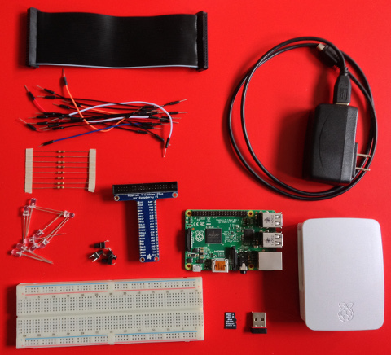

The journey starts with Bootcamp. All students enrolling into Predicate Academy run through this foundational experience. We cover the basics of working with hardware, using the Linux operating system, writing code, and problem decomposition. These skills are the necessary building blocks for the rest of our courses at Predicate. We teach Linux, as opposed to Mac or Windows, due to its accessibility and wide adoption in the computing field. Bootcamp is built with the expectation that students have no prior coding experience. Core concepts covered in Bootcamp include:
These concepts are wrapped around fun activities. We will learn how to navigate the Linux file system by hunting for files with secret messages. Basic programming constructs are first taught via MIT's Scratch - a visual programming language - where we will learn how to code some tunes and broadcast the results over a radio station. We'll then use Scratch to control basic electronic circuits - turning on a single light then programming a traffic light assembly.
Finally, as a capstone to Bootcamp, we'll switch from Scratch to Python then build our own fully functioning Simon game complete with code, lights, and switches.
Early into Bootcamp students will assemble their own Predi-Kit, a hardware bundle that includes a Raspberry Pi and all the accessories. We provide a monitor and keyboard/mouse for use at the academy and that's all you'll need to continue prototyping and exploring at home after Bootcamp concludes. The cost of the kit is included in the Bootcamp tuition and is used throughout subsequent courses taught at Predicate. In fact, many courses will enhance the kit by adding additional sensors or other electronics.
The Predi-Kit includes a Raspberry Pi 2 - Model B, a case for the Pi, USB power adapter, USB wifi adapter, 8GB microSDHC card preloaded with Rasbian and Predicate software, full size breadboard, Pi Cobbler Plus (connects Pi to breadboard), eight 1K resistors, eight LEDs (blue, yellow, green, red), four large tact switches, and male/male jumper cables. The specifics of the kit may change over time due to hardware availability and learning adjustments from prior classes.
Accidents Happen. Blow a LED? Swap inputs and outputs? Corrupt a filesystem? We recognize that accidents happen and are part of the learning process. Predicate will replace any hardware that is damaged in class for the life of the equipment. Break something at home? We'll help identify what is needed to spring back into action.